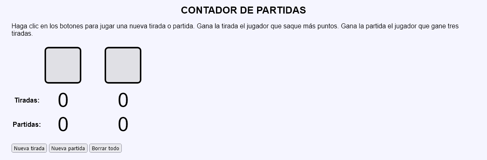
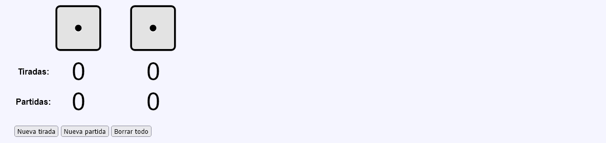
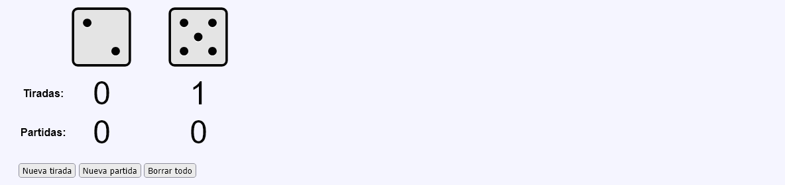
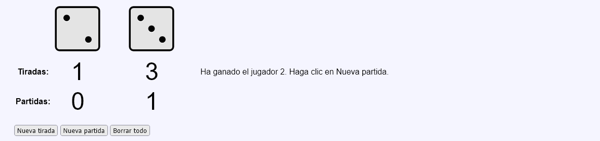
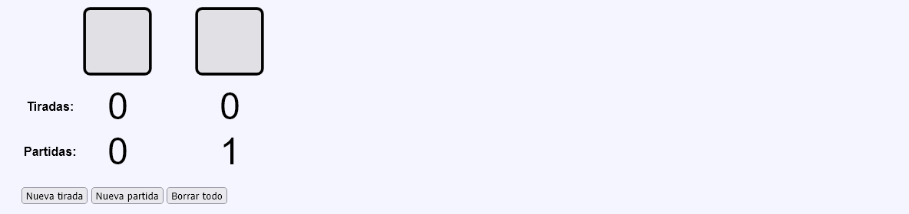
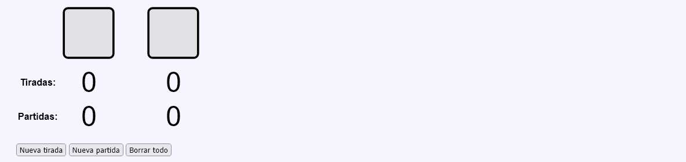

En este ejercicio se debe crear un programa que simule una partida de un juego de dados y lleve la cuenta de las partidas ganadas por cada jugador. El juego consiste en que cada jugador tira un dado y gana el jugador que obtiene el valor más alto. El jugador que gana tres tiradas gana la partida.
Contador de partidas - Comentarios
El programa podrá tener dos páginas y utilizar sesiones:
La primera página muestra una tabla con tres filas:
La primera fila muestra los dados de cada jugador.
La segunda fila muestra las tiradas ganadas por cada jugador en cada partida.
La tercera fila muestra las partidas ganadas por cada jugador.
La primera vez que se abre la página, o cuando se pulsa el botón "Volver a empezar", los dados no muestran ningún valor y el número de tiradas y partidas de cada jugador son 0.

Al hacer clic en el botón "Nueva tirada", se mostrarán nuevos valores de los dados. En caso de que gane uno de los dos jugadores, se incrementará el número de tiradas ganadas. Si el jugador ha ganado 3 tiradas, se mostrará un mensaje indicando quién ha ganado y se incrementará el número de partidas ganadas.



Si un jugador ha ganado una partida, pulsar el botón "Nueva tirada" no mostrará una nueva tirada hasta que no se pulse el botón "Nueva partida".
Si se hace clic en el botón "Nueva partida", tanto si se ha terminado una partida como si no, los dados no mostrarán ningún valor y los contadores de tiradas volverán a 0, pero se mantendrán los contadores de partidas.

Si se hace clic en el botón "Borrar todo", tanto si se ha terminado una partida como si no, los dados no mostrarán ningún valor y los contadores de tiradas y partidas volverán a 0.

La segunda página recoge el botón, modifica las variables de sesión y redirige a la primera página.
Si se intenta acceder directamente a la segunda página sin pasar por la primera o si se envía a la segunda página información distinta a la esperada, se redirigirá a la primera página sin informar al usuario.
No se debe cambiar el nombre del control incluido en las plantillas.
Al actualizar la primera página, no se modificará el contenido.